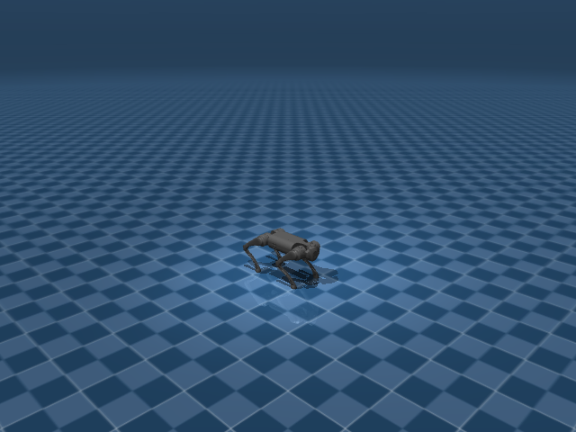

Go1 Joystick Flat
任务目标
让 Go1 在平地上跟随 joystick 线速度与角速度命令，同时保持身体姿态、足端接触节律和动作平滑。

图片由
_tools/render_static_images.py使用src/unilab/assets/robots/go1/scene_flat.xml的 MuJoCo scene 离屏渲染生成；如果当前环境无法启用 EGL/OSMesa，生成 manifest 会记录失败原因。
证据索引
| 项目 | 内容 |
|---|---|
| 任务类别 | 运动控制 |
| 机器人 | go1 |
| 代表 scene | src/unilab/assets/robots/go1/scene_flat.xml |
| 代表源码 | src/unilab/envs/locomotion/go1/joystick.py |
| 代表 owner YAML | conf/appo/task/go1_joystick_flat/mujoco.yaml |
| 动作维度 | 12 |
Registry 与 Owner
| 注册名 | 后端 | 配置类 | 配置源码 |
|---|---|---|---|
| Go1JoystickFlat | motrix, mujoco | Go1JoystickCfg | src/unilab/envs/locomotion/go1/joystick.py |
| 算法组 | 后端 | training.task_name | owner YAML |
|---|---|---|---|
| appo | mujoco | Go1JoystickFlat | conf/appo/task/go1_joystick_flat/mujoco.yaml |
| td3 | motrix | Go1JoystickFlat | conf/offpolicy/task/td3/go1_joystick_flat/motrix.yaml |
| ppo | motrix | Go1JoystickFlat | conf/ppo/task/go1_joystick_flat/motrix.yaml |
| ppo | mujoco | Go1JoystickFlat | conf/ppo/task/go1_joystick_flat/mujoco.yaml |
代码级执行流
这部分不再用通用关键词套模板，而是为 go1_joystick_flat 单独写源码导读。源码片段只负责提供证据；每节说明都围绕本任务自己的配置、状态、观测、动作和 reward 语义展开。
| 阶段 | 证据位置 | 代码级说明 |
|---|---|---|
| 1. Hydra owner | conf/appo/task/go1_joystick_flat/mujoco.yaml | 训练命令先 compose owner YAML。这里确定 training.task_name、后端身份、obs_groups、reward scale 和 env override。 |
| 2. Registry 构造 Env | src/unilab/envs/locomotion/go1/joystick.py | @registry.envcfg 注册配置类，@registry.env 注册后端实现类；训练脚本只调用 registry，不直接 new 任务类。 |
| 3. Reset/初始状态 | src/unilab/assets/robots/go1/scene_flat.xml | env 从 scene keyframe 或 motion/grasp cache 取初态，再通过 reset randomization 改写 qpos/qvel/info。 |
| 4. Obs dict | src/unilab/envs/locomotion/go1/joystick.py | env 读取 backend 传感器和 info，返回 dict；learner 根据 obs_groups_spec 和 owner algo.obs_groups 选择 actor/critic 输入。 |
| 5. Action 到控制目标 | src/unilab/envs/locomotion/go1/joystick.py | policy 输出先按 action scale / 控制顺序映射到 actuator，再由 backend step 推进仿真。 |
| 6. Reward dispatch | src/unilab/envs/locomotion/go1/joystick.py | 源码把 reward key 映射到函数，owner YAML 的 scale 决定每项奖励/惩罚是否启用以及权重。 |
| 7. Termination | src/unilab/envs/locomotion/go1/joystick.py | env 根据高度、姿态、接触、参考轨迹误差、物体状态或能量阈值生成 done/terminated。 |
本任务阅读重点
| 阅读重点 |
|---|
Go1 平地任务要读 Go1JoystickCfg 和 Go1WalkTask：配置层决定 scene/home keyframe，env 层决定 12 维腿部动作如何变成 PD 目标。 |
| 这个任务没有地形高度扫描，obs 的重点是命令、IMU、关节误差、关节速度、上一帧动作和四相位步态编码。 |
| reward 重点看速度跟踪与 gait phase；终止主要由 base 高度、姿态倾斜和 episode horizon 共同决定。 |
本任务注册入口
| 注册名 | 配置类 | 可用后端 |
|---|---|---|
| Go1JoystickFlat | Go1JoystickCfg | motrix, mujoco |
本任务源码锚点
| 小节 | 源码文件 | 明确锚点 |
|---|---|---|
| 配置与注册 | src/unilab/envs/locomotion/go1/joystick.py | Go1JoystickCfg, Go1JoystickFlat |
| Obs：平地步态输入 | src/unilab/envs/locomotion/go1/joystick.py | obs_groups_spec, _compute_obs |
| Action：12 维腿部目标 | src/unilab/envs/locomotion/common/base.py | apply_action, default_angles |
| Reward：速度与步态 | src/unilab/envs/locomotion/go1/joystick.py | _init_reward_functions, tracking_lin_vel |
| Termination 与随机化 | src/unilab/envs/locomotion/go1/joystick.py | update_state, terminated, DomainRandConfig |
关键源码逐段解释（按本任务手写）
配置与注册
| 本任务人工导读 |
|---|
| 确认 flat scene、home keyframe 和 Go1 12 DoF 控制配置都在 EnvCfg 中声明。 |
| registry 把 Go1JoystickFlat 绑定到 Go1WalkTask，训练脚本只消费注册名。 |
domain_rand 默认打开 base mass、COM 和 push，这些都由 reset/interval 生命周期处理。 |
# src/unilab/envs/locomotion/go1/joystick.py
@registry.envcfg("Go1JoystickFlat")
# 注册 Go1JoystickFlat 配置，owner YAML 通过 training.task_name 引用它。
@dataclass
# dataclass 让 Hydra 能覆盖 scene、commands、reward_config、domain_rand 等字段。
class Go1JoystickCfg(Go1BaseCfg):
# 继承 Go1BaseCfg，复用 Go1 的资产、关节顺序和默认控制配置。
scene: SceneCfg = field(
# scene 是任务场景配置；flat 任务使用平地场景。
default_factory=lambda: SceneCfg(
# default_factory 避免 dataclass 共享 SceneCfg 实例。
model_file=str(ASSETS_ROOT_PATH / "robots" / "go1" / "scene_flat.xml")
# 平地 XML 包含 Go1 机器人、地面、传感器和 home keyframe。
)
)
max_episode_seconds: float = 20.0
# 单个 episode 最长 20 秒，超时由 env contract 标记 truncated。
init_state: InitState = field(default_factory=InitState)
# 初始 base 位置来自 InitState，Go1 默认高度是 0.45。
commands: Commands = field(default_factory=Commands)
# Commands 负责采样目标 x/y 速度和 yaw 角速度。
reward_config: RewardConfig | None = None
# reward_config 必须由 owner YAML 提供，否则 env 初始化会报错。
sensor: JoystickSensor = field(default_factory=JoystickSensor) # type: ignore[assignment]
# JoystickSensor 声明 local_linvel、gyro、足端力和足端位置传感器名称。
domain_rand: DomainRandConfig = field(
# domain_rand 保持在配置层，训练脚本不直接写随机化逻辑。
default_factory=lambda: DomainRandConfig(
# lambda 每次创建新的 DomainRandConfig，避免共享可变默认值。
randomize_base_mass=True,
# reset 随机化 base 质量，增强模型参数鲁棒性。
random_com=True,
# reset 随机化质心偏移，模拟机体负载和建模误差。
push_robots=True,
# interval 随机推机器人，训练抗外力扰动能力。
)
)
Obs：平地步态输入
| 本任务人工导读 |
|---|
| 49 维 actor obs 由 gyro、gravity、关节误差、关节速度、动作历史、命令和 feet phase 组成。 |
| critic 额外使用本体线速度，平地任务不引入地形高度扫描。 |
| feet phase 是四足步态相位输入，四个足端各 1 维。 |
# src/unilab/envs/locomotion/go1/joystick.py
@property
# obs_groups_spec 是 learner 读取 obs dict 前的维度 contract。
def obs_groups_spec(self) -> dict[str, int]:
# Go1 flat 暴露 actor 组 "obs" 和 critic 组 "critic"。
# gyro(3) + gravity(3) + diff(12) + dof_vel(12) + action(12) + cmd(3) + phase(4) = 49
# actor 输入维度按四足 12 DoF 和 4 个足端相位计算。
return {"obs": 49, "critic": 52}
# critic 比 actor 多 3 维 local linvel，所以是 52。# src/unilab/envs/locomotion/go1/joystick.py
def _compute_obs(
# Go1 flat 每步通过这个函数构造 actor/critic 观测。
self, info: dict, linvel, gyro, gravity, dof_pos, dof_vel, feet_phase
# linvel/gyro/gravity 来自 backend 传感器；feet_phase 由 update_state 更新。
) -> dict[str, np.ndarray]:
# 返回值必须是 obs dict。
noise_cfg = self._cfg.noise_config
# 读取观测噪声配置。
diff = dof_pos - self.default_angles
# 关节角转成相对 home/default 姿态的偏差。
gyro = self._obs_noise(gyro, noise_cfg.scale_gyro)
# 角速度加噪后给 actor。
gravity = self._obs_noise(gravity, noise_cfg.scale_gravity)
# 重力方向加噪后给 actor。
diff = self._obs_noise(diff, noise_cfg.scale_joint_angle)
# 关节角偏差加噪。
dof_vel = self._obs_noise(dof_vel, noise_cfg.scale_joint_vel)
# 关节速度加噪。
linvel = self._obs_noise(linvel, noise_cfg.scale_linvel)
# critic 使用的 local linvel 也按配置加噪。
command = info["commands"]
# 当前目标速度命令来自 reset/command sampler。
last_actions = info.get("current_actions", np.zeros_like(diff))
# 上一帧动作历史；reset 后若不存在则用 12 维零数组。
obs = np.concatenate(
# actor obs 开始拼接。
[gyro, -gravity, diff, dof_vel, last_actions, command, feet_phase],
# 3 gyro + 3 gravity + 12 diff + 12 vel + 12 action + 3 command + 4 phase。
axis=1,
# 沿特征维拼接。
dtype=get_global_dtype(),
# 输出 dtype 使用全局 dtype。
)
critic = np.concatenate([obs, linvel], axis=1, dtype=get_global_dtype())
# critic 在 actor obs 后追加 3 维局部线速度。
return {"obs": obs, "critic": critic}
# 返回 actor/critic 两组观测。Action：12 维腿部目标
| 本任务人工导读 |
|---|
| Go1 平地任务没有覆写 apply_action，而是继承 locomotion common base 的动作映射。 |
| action 与 12 个 hip/thigh/calf actuator 一一对应，缩放后叠加默认角。 |
如果打开 simulate_action_latency，实际执行上一帧动作；否则执行当前动作。 |
# src/unilab/envs/locomotion/common/base.py
def apply_action(self, actions: np.ndarray, state: NpEnvState) -> np.ndarray:
# Go1 flat 继承通用 locomotion action 映射。
state.info["last_actions"] = state.info.get("current_actions", np.zeros_like(actions))
# 保存上一帧动作，供 obs 和 action_rate reward 使用。
state.info["current_actions"] = actions
# 保存当前 policy 输出。
exec_actions = (
# exec_actions 是本次真正送到 actuator target 的动作。
state.info["last_actions"]
# 如果模拟动作延迟，就执行上一帧动作。
if self._cfg.control_config.simulate_action_latency
# 由 control_config 控制是否启用延迟。
else actions
# 默认直接执行当前动作。
)
ctrl: np.ndarray = (
# ctrl 是最终关节位置目标。
exec_actions * self._cfg.control_config.action_scale + self.default_angles
# action 先乘 scale，再叠加 default_angles，得到 12 个关节目标角。
)
return ctrl
# 返回给 backend 的 actuator control。Reward：速度与步态
| 本任务人工导读 |
|---|
| Go1 平地 reward 以 tracking_lin_vel/tracking_ang_vel 为主。 |
| feet_phase、orientation、action_rate 等项让速度跟踪同时满足步态节律和动作平滑。 |
这里仅注册 reward 函数；实际哪些项启用由 owner YAML 的 reward.scales 决定。 |
# src/unilab/envs/locomotion/go1/joystick.py
def _init_reward_functions(self):
# 初始化 reward dispatch 表。
self._reward_fns: dict[str, Any] = {
# key 与 reward.scales 中的名字对应。
"tracking_lin_vel": rewards.tracking_lin_vel,
# 线速度跟踪奖励，鼓励 Go1 按 command 行走。
"tracking_ang_vel": rewards.tracking_ang_vel,
# yaw 角速度跟踪奖励。
"lin_vel_z": rewards.lin_vel_z,
# base 垂直速度惩罚，避免上下跳。
"ang_vel_xy": rewards.ang_vel_xy,
# roll/pitch 角速度惩罚，约束身体横滚和俯仰抖动。
"base_height": rewards.base_height,
# base 高度项，让机身保持目标高度。
"action_rate": rewards.action_rate,
# 动作变化惩罚，让腿部控制更平滑。
"similar_to_default": rewards.similar_to_default,
# 关节姿态接近默认姿态的约束。
"swing_feet_z": self._reward_swing_feet_z,
# Go1 自定义摆动脚高度奖励，使用 feet_phase 和 feet_pos。
}Termination 与随机化
| 本任务人工导读 |
|---|
| update_state 中同时计算终止、reward 和 obs，是本任务 step 后处理的核心。 |
| domain randomization 来自 locomotion common 配置，作用在 reset/interval 冷路径。 |
| 平地终止主要看 upvector z 分量，低于阈值说明机身倾倒。 |
# src/unilab/envs/locomotion/go1/joystick.py
def update_state(self, state: NpEnvState) -> NpEnvState:
# 每个仿真 step 后更新步态相位、传感器缓存、终止、reward 和 obs。
self.phase = np.fmod(self.phase + self._cfg.ctrl_dt * self.gait_frequency, 1.0)
# phase 按控制周期推进，并保持在 [0, 1) 周期内。
self.feet_phase[:, 0] = self.phase
# FL 脚使用当前相位。
self.feet_phase[:, 3] = self.phase
# RR 脚与 FL 同相，形成对角小跑节律。
self.feet_phase[:, 1] = (self.phase + 0.5) % 1
# FR 脚相位比 FL 晚半个周期。
self.feet_phase[:, 2] = (self.phase + 0.5) % 1
# RL 脚与 FR 同相，另一组对角腿错相。
linvel = self.get_local_linvel()
# 读取 base 局部线速度。
gyro = self.get_gyro()
# 读取 IMU 角速度。
gravity = self._backend.get_sensor_data("upvector")
# 读取 upvector，用于倾倒判断和 obs。
dof_pos = self.get_dof_pos()
# 读取 12 个关节位置。
dof_vel = self.get_dof_vel()
# 读取 12 个关节速度。
self.feet_force[:, :, :] = 0
# 清空足端力缓存，准备写入当前 step 传感器值。
for i in range(len(self._cfg.sensor.feet_force)):
# 遍历四个足端接触/力传感器。
self.feet_force[:, i, :] = self._backend.get_sensor_data(self._cfg.sensor.feet_force[i])
# 写入第 i 个足端力数据。
for i in range(len(self._cfg.sensor.feet_pos)):
# 遍历四个足端位置传感器。
self.feet_pos[:, i, :] = self._backend.get_sensor_data(self._cfg.sensor.feet_pos[i])
# 写入第 i 个足端位置。
terminated = gravity[:, 2] <= 0.5
# upvector z 太小说明机身倾斜严重，判定 episode 失败。
reward = self._compute_reward(state.info, linvel, gyro, dof_pos)
# 使用当前状态计算 reward。
obs = self._compute_obs(
# 组装下一帧 obs dict。
state.info, linvel, gyro, gravity, dof_pos, dof_vel, self.feet_phase
# obs 需要 info、速度、IMU、关节状态和四足相位。
)
return state.replace(obs=obs, reward=reward, terminated=terminated)
# 返回更新后的 NpEnvState。# src/unilab/envs/locomotion/go1/joystick.py
@registry.envcfg("Go1JoystickFlat")
# 这里再次引用配置，是为了说明平地任务默认启用哪些 DR 开关。
@dataclass
class Go1JoystickCfg(Go1BaseCfg):
# Go1JoystickCfg 是 flat 任务的 owner cfg。
scene: SceneCfg = field(
# scene 选择平地模型。
default_factory=lambda: SceneCfg(
model_file=str(ASSETS_ROOT_PATH / "robots" / "go1" / "scene_flat.xml")
# 平地 scene 不包含 rough terrain generator。
)
)
max_episode_seconds: float = 20.0
# episode 最大时长。
init_state: InitState = field(default_factory=InitState)
# reset 初始状态配置。
commands: Commands = field(default_factory=Commands)
# command 采样配置。
reward_config: RewardConfig | None = None
# reward 配置由 owner YAML 注入。
sensor: JoystickSensor = field(default_factory=JoystickSensor) # type: ignore[assignment]
# 传感器名称配置。
domain_rand: DomainRandConfig = field(
# 域随机化配置。
default_factory=lambda: DomainRandConfig(
randomize_base_mass=True,
# reset 随机 base mass。
random_com=True,
# reset 随机 COM。
push_robots=True,
# interval 随机外力 push。
)
)
Agent
Agent 输出 12 维动作，动作经 action_scale 缩放后叠加到 keyframe 默认关节角，作为 PD 位置目标。
训练入口通过 owner YAML 决定注册 env、后端身份和算法参数；CLI 应使用 --sim 选择 backend owner，而不是单独 override training.sim_backend。
# conf/appo/task/go1_joystick_flat/mujoco.yaml
training:
task_name: Go1JoystickFlat
sim_backend: mujoco
algo:
obs_groups: {}
num_envs: null
max_iterations: 150Env
Env 由 Go1WalkTask 承载，遵守 NpEnv dict obs contract，并通过 registry 暴露 MuJoCo/Motrix 后端。
Env 必须遵守 NpEnv contract：reset() 返回 (obs_dict, info_dict)，obs 是 dict，obs_groups_spec 决定 learner 使用哪些观测组。
# src/unilab/envs/locomotion/go1/joystick.py
gyro = "gyro"
feet_force = ["FL_foot_contact", "FR_foot_contact", "RL_foot_contact", "RR_foot_contact"]
feet_pos = ["FL_pos", "FR_pos", "RL_pos", "RR_pos"]
@registry.envcfg("Go1JoystickFlat")
@dataclass
class Go1JoystickCfg(Go1BaseCfg):
scene: SceneCfg = field(
default_factory=lambda: SceneCfg(
model_file=str(ASSETS_ROOT_PATH / "robots" / "go1" / "scene_flat.xml")Obs
观测围绕本体局部速度、角速度、重力方向、命令、关节位置/速度和上一帧动作构造；critic 额外读取特权速度信息。
Obs 字段级拆解
下面的表格把源码里的观测拼接逻辑拆成语义字段。维度如果依赖 history、terrain scan 或 motion body 数量，文档会写成“规模”而不是硬编码，避免和配置漂移。
| 观测字段 | 维度/规模 | 代码来源 | 中文说明 |
|---|---|---|---|
| command | 通常 3 维 | commands / joystick 采样 | 期望 x/y 线速度和 yaw 角速度，是策略要跟踪的外部目标。 |
| gyro | 3 维 | get_gyro() / sensor.gyro | 机身角速度，帮助策略判断身体旋转和姿态变化。 |
| gravity | 3 维 | 局部重力投影 | 把世界重力投到 body 坐标系，用于表示 roll/pitch 倾斜。 |
| dof_pos - default | nu 维 | 关节角与 keyframe 默认角差 | 告诉策略每个关节离默认站姿有多远。 |
| dof_vel | nu 维 | backend dof velocity | 关节速度，用于阻尼和判断腿部摆动速度。 |
| last_actions | nu 维 | info['last_actions'] | 上一控制步动作，帮助策略形成平滑控制。 |
| critic privileged | 任务相关 | critic obs group | 训练 critic 可读取更多速度或地形信息，actor 不一定可见。 |
owner YAML 中的 algo.obs_groups 说明算法从 env obs dict 中读取哪些组。没有写入 owner 的字段保持 env cfg 默认值，文档不臆造未配置项。
# conf/appo/task/go1_joystick_flat/mujoco.yaml
algo:
obs_groups:
{}
代码侧观测通常在 _get_obs、_build_obs、obs_groups_spec 或 base env 中组装：
# src/unilab/envs/locomotion/go1/joystick.py
self.gait_frequency = 2
self.feet_force = np.zeros((num_envs, len(cfg.sensor.feet_force), 3), dtype=np.float32)
self._init_domain_randomization(Go1JoystickDomainRandomizationProvider())
self.feet_pos = np.zeros((num_envs, len(cfg.sensor.feet_pos), 3), dtype=np.float32)
@property
def obs_groups_spec(self) -> dict[str, int]:
# gyro(3) + gravity(3) + diff(12) + dof_vel(12) + action(12) + cmd(3) + phase(4) = 49
return {"obs": 49, "critic": 52}
def _init_reward_functions(self):
self._reward_fns: dict[str, Any] = {
"tracking_lin_vel": rewards.tracking_lin_vel,源码锚点拆解：
| 源码符号 | 中文说明 |
|---|---|
| obs_groups_spec | 声明 obs dict 中各观测组的维度，是 wrapper/learner 对齐观测的契约。 |
| _compute_obs | 读取 backend 传感器和 info 字段，拼接 actor/critic 观测。 |
Action
动作对应四条腿的 hip/thigh/calf actuator；XML 编译得到 nu=12。
Action 逐维拆解
四足任务的 action 逐维对应四条腿的 hip/thigh/calf actuator。env 在 apply_action 中把策略输出乘以 action_scale，再加到 keyframe 默认角上；因此策略学习的是“相对默认站姿的目标角偏移”，不是直接力矩。
当前代表 scene 编译出的 action 维度为 12。下表来自 MuJoCo 编译模型的 actuator 顺序，也就是策略输出维度和执行器维度的对应关系。
| Action 维度 | 执行器 | 驱动关节 | 中文含义 | 控制/限制说明 |
|---|---|---|---|---|
| 0 | FR_hip | FR_hip_joint | 右前腿髋外展/内收关节 | -0.863 ~ 0.863 |
| 1 | FR_thigh | FR_thigh_joint | 右前腿髋俯仰（大腿）关节 | -0.686 ~ 4.501 |
| 2 | FR_calf | FR_calf_joint | 右前腿膝关节（小腿摆动） | -2.818 ~ -0.888 |
| 3 | FL_hip | FL_hip_joint | 左前腿髋外展/内收关节 | -0.863 ~ 0.863 |
| 4 | FL_thigh | FL_thigh_joint | 左前腿髋俯仰（大腿）关节 | -0.686 ~ 4.501 |
| 5 | FL_calf | FL_calf_joint | 左前腿膝关节（小腿摆动） | -2.818 ~ -0.888 |
| 6 | RR_hip | RR_hip_joint | 右后腿髋外展/内收关节 | -0.863 ~ 0.863 |
| 7 | RR_thigh | RR_thigh_joint | 右后腿髋俯仰（大腿）关节 | -0.686 ~ 4.501 |
| 8 | RR_calf | RR_calf_joint | 右后腿膝关节（小腿摆动） | -2.818 ~ -0.888 |
| 9 | RL_hip | RL_hip_joint | 左后腿髋外展/内收关节 | -0.863 ~ 0.863 |
| 10 | RL_thigh | RL_thigh_joint | 左后腿髋俯仰（大腿）关节 | -0.686 ~ 4.501 |
| 11 | RL_calf | RL_calf_joint | 左后腿膝关节（小腿摆动） | -2.818 ~ -0.888 |
控制参数来自 owner YAML 的 env.control_config，缺省值由对应 env cfg/dataclass 提供。
| 配置字段 | 当前值 | 中文说明 |
|---|
# conf/appo/task/go1_joystick_flat/mujoco.yaml
env:
control_config:
{}
动作到执行器的实际映射由 backend 的 actuator control range 和 env 的 apply_action/控制函数完成：
# 未在 src/unilab/envs/locomotion/go1/joystick.py 中找到片段：apply_action, action_scale, compute_go2w_motor_ctrl, _init_action_space源码锚点拆解：
| 源码符号 | 中文说明 |
|---|
Reward
奖励由 locomotion 公共 reward dispatcher 和 owner YAML 的 reward.scales 组合，强调速度跟踪、姿态、足端节律与能耗惩罚。
Reward 逐项拆解
reward scale 以 owner YAML 的 reward.scales 为真源；源码中的 RewardConfig 描述可用字段，训练脚本只做 Hydra 组装和注入。正数通常表示奖励，负数通常表示惩罚，0 表示该项在当前 owner 中关闭或仅保留接口。
| Reward key | Scale | 方向 | 中文含义 |
|---|---|---|---|
| tracking_lin_vel | 1.0 | 奖励 | 线速度命令跟踪奖励，鼓励机器人实际平面速度贴近 joystick/命令速度。 |
| tracking_ang_vel | 0.2 | 奖励 | 角速度命令跟踪奖励，鼓励 yaw 角速度贴近转向命令。 |
| lin_vel_z | -5.0 | 惩罚 | 竖直速度惩罚，限制 base 上下弹跳。 |
| ang_vel_xy | -0.1 | 惩罚 | 横滚/俯仰角速度惩罚，抑制身体剧烈摇摆。 |
| base_height | -100.0 | 惩罚 | 身体高度项，使 base 高度保持在任务目标附近。 |
| action_rate | -0.005 | 惩罚 | 动作变化惩罚，抑制相邻控制步之间的目标突变。 |
| similar_to_default | -0.1 | 惩罚 | 仓库 owner YAML 中声明的奖励项；具体实现见本页源码片段和 env 的 reward dispatch。 |
| contact | 0.24 | 奖励 | 接触项，约束指定足端或身体部位的接触模式。 |
# conf/appo/task/go1_joystick_flat/mujoco.yaml
reward:
scales:
tracking_lin_vel: 1.0
tracking_ang_vel: 0.2
lin_vel_z: -5.0
ang_vel_xy: -0.1
base_height: -100.0
action_rate: -0.005
similar_to_default: -0.1
contact: 0.24
tracking_sigma: 0.25
base_height_target: 0.3
源码中的 reward 入口：
# src/unilab/envs/locomotion/go1/joystick.py
@dataclass
class InitState:
pos = [0.0, 0.0, 0.45]
@dataclass
class RewardConfig:
scales: dict[str, float]
tracking_sigma: float
base_height_target: float
@dataclass源码锚点拆解：
| 源码符号 | 中文说明 |
|---|---|
| RewardConfig: | 声明 reward 可用参数和默认 scale。 |
| _init_reward_functions | 把 reward 名称映射到源码函数，owner YAML 的 scale 会按这些 key 分发。 |
| _compute_reward | reward 相关源码锚点。 |
| _reward_contact | 单个 reward 项的实现函数，通常返回每个 env 的 reward 向量。 |
| _reward_swing_feet_z | 单个 reward 项的实现函数，通常返回每个 env 的 reward 向量。 |
初始状态
reset 读取 home keyframe，并可叠加 base 速度、关节和物理参数随机化。
机器人默认姿态来自 scene/task fragment 中的 keyframe；任务 reset 在此基础上加入命令、motion reference、物体状态或随机化。
<!-- src/unilab/assets/robots/go1/scene_flat.xml -->
<contact name="RR_foot_contact" geom1="floor" geom2="RR" data="force" num="1" reduce="mindist"/>
</sensor>
<keyframe>
<key name="home" qpos="
0 0 0.27 1 0 0 0
0 0.9 -1.8# src/unilab/envs/locomotion/go1/joystick.py
push_robots=True,
)
)
class Go1JoystickDomainRandomizationProvider(LocomotionDRProvider):
def _compute_reset_obs(
self,
env: Any,
env_ids: Any,
info_updates: Any,
linvel: Any,
gyro: Any,终止条件
主要终止来自身体高度过低、倾斜过大和 episode horizon。
终止条件通常由 env 源码中的 _compute_termination(s)、reward config 阈值和 max_episode_seconds 共同决定。
# conf/appo/task/go1_joystick_flat/mujoco.yaml
env:
{}
reward:
{}
# src/unilab/envs/locomotion/go1/joystick.py
gravity = self._backend.get_sensor_data("upvector")
dof_pos = self.get_dof_pos()
dof_vel = self.get_dof_vel()
self.feet_force[:, :, :] = 0
for i in range(len(self._cfg.sensor.feet_force)):
self.feet_force[:, i, :] = self._backend.get_sensor_data(self._cfg.sensor.feet_force[i])
for i in range(len(self._cfg.sensor.feet_pos)):
self.feet_pos[:, i, :] = self._backend.get_sensor_data(self._cfg.sensor.feet_pos[i])
terminated = gravity[:, 2] <= 0.5
reward = self._compute_reward(state.info, linvel, gyro, dof_pos)
obs = self._compute_obs(
state.info, linvel, gyro, gravity, dof_pos, dof_vel, self.feet_phase
)
return state.replace(obs=obs, reward=reward, terminated=terminated)
def _compute_obs(
self, info: dict, linvel, gyro, gravity, dof_pos, dof_vel, feet_phase域随机化
域随机化集中在质量/COM/重力/摩擦/推力/PD gain 等 locomotion 冷路径配置。
域随机化只在 reset/interval 等冷路径触发，不在 step 热路径解析资产或探测 backend 私有能力。
域随机化字段拆解
| 配置字段 | 当前值 | 中文说明 |
|---|
# conf/appo/task/go1_joystick_flat/mujoco.yaml
env:
domain_rand:
{}
# src/unilab/envs/locomotion/go1/joystick.py
from unilab.base.np_env import NpEnvState
from unilab.base.scene import SceneCfg
from unilab.dtype_config import get_global_dtype
from unilab.envs.common.rotation import np_quat_mul, np_yaw_to_quat
from unilab.envs.locomotion.common import rewards
from unilab.envs.locomotion.common.commands import Commands
from unilab.envs.locomotion.common.domain_rand import DomainRandConfig
from unilab.envs.locomotion.common.dr_provider import LocomotionDRProvider
from unilab.envs.locomotion.common.rewards import RewardContext
from unilab.envs.locomotion.common.terrain_spawn import (
TerrainCurriculumCfg,
TerrainSpawnManager,
)